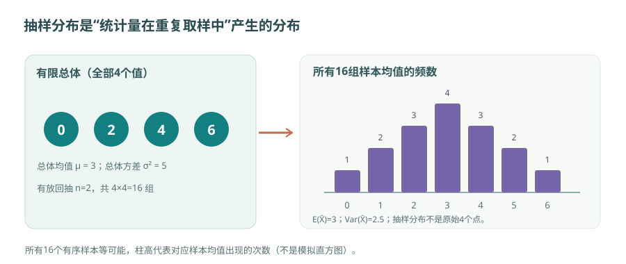
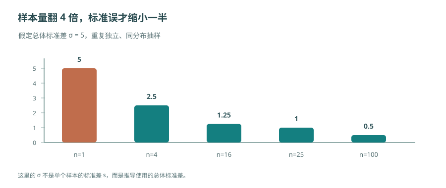
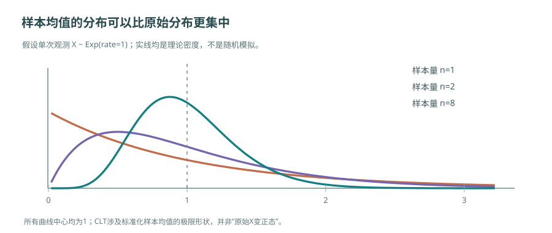

抽样与抽样分布：从统计量理解不确定性
总体均值可以固定不动，样本均值却每次不同。把所有可能样本的统计量展开，就能看清“标准误”究竟描述什么，以及中心极限定理究竟保证了什么。
01 · 样本与抽样分布是两个不同对象
第 02 篇讨论如何从总体抽取一批观测。本篇再往前一步：假设重复很多次执行同样的抽样设计，每次都得到一个样本均值；把这些均值放在一起，才得到样本均值的抽样分布（sampling distribution）。
单个样本的 20 个观测值分布，与重复抽样产生的 1000 个“均值”分布不是一个概念；也不能把软件 bootstrap 重采样结果与真实抽样机制混为一谈，尽管它们可能用于近似某些抽样不确定性。
02 · 完整枚举：4 人总体、每次有放回抽 2 人
考虑一个极小但完整的总体 {0,2,4,6}。总体均值 μ=3，总体方差 σ²=[(0−3)²+(2−3)²+(4−3)²+(6−3)²]/4=5。每次独立有放回抽 2 个值，可以得到4×4=16个等概率有序样本。
它们的样本均值分别只可能是0、1、2、3、4、5、6，其频次为 1、2、3、4、3、2、1；因此 E[X̄]=3，Var(X̄)=2.5。这个分布是精确枚举得到的，不是根据中心极限定理猜的。

03 · 标准差与标准误：两种分散程度
标准差（SD）刻画观测值本身如何围绕均值变化；标准误（SE）刻画一个统计量（例如样本均值）在重复抽样下的波动。SE 是统计量抽样分布的标准差，绝不是“标准差的另一种写法”。
上一个总体的 σ=√5≈2.236。每次独立有放回取 n=2，样本均值 SE=√(5/2)=约1.581。常规实际应用中 σ 往往未知，用样本标准差 s/√n 作为标准误的估计，但这依赖相应抽样与独立性假设。

04 · 无放回抽样：有限总体修正
如果从这四个值中不放回抽取2个不同单位，就不再有16个等概率有序样本，而只有4×3=12个。其样本均值1、2、3、4、5出现频数2、2、4、2、2；均值仍为3，但方差变成5/3≈1.667。
这里 N=4、n=2，σ²=5 是采用分母 N 的有限总体方差，因此 Var(X̄)=(5/2)×((4−2)/(4−1))=5/3。若改用有限总体的 S²（分母 N−1），等价写法是 Var(X̄)=(1−n/N)×S²/n。公式看似不同，实际在区分两种总体方差定义。
不要忽略抽样设计
分层抽样、整群抽样、加权估计与时间相关数据都有各自的方差估计方法。把全部观测当成独立同分布数据直接计算 s/√n 可能严重低估或高估标准误。若是非概率样本，抽样波动也不是代表性偏差的万能补救。
05 · 中心极限定理说的是形状，不只是宽度
假定 X₁,…,Xₙ 独立同分布，有共同的有限均值 μ 和有限正方差 σ²，则标准化样本均值随着 n 增长按分布收敛至标准正态：
这与大数定律有关但不同：大数定律关心样本均值趋近 μ；中心极限定理关心以 √n 倍放大误差后得到的分布形状。它不要求总体自身是正态，也不承诺 n=30 对所有厚尾/偏态数据都足够。

06 · 改变 n：标准误下降有多快
设置总体标准差 σ=5，只改变同分布独立抽样的样本量 n，观察均值的理论标准误。这个交互是公式计算，不是随机模拟。
标准误实验
SE = 5 / √4 = 2.500
from collections import Counter
from itertools import product
from statistics import mean, pvariance
population = [0,2,4,6]
means = [(a+b)/2 for a,b in product(population, repeat=2)]
print(dict(sorted(Counter(means).items())))
# {0.0:1, 1.0:2, 2.0:3, 3.0:4, 4.0:3, 5.0:2, 6.0:1}
print(mean(means), pvariance(means)) # 3.0 2.5自我检查
问题 1：样本量从 25 增加到 100，SE 如何改变？答案：降为原来一半，因 √100=2√25。
问题 2：是否可以把总体方差分母 N 与有限修正公式中以分母 N−1 定义的 S² 混用？答案：不可以，必须选择一致的定义。
07 · 参考资料
- OpenStax · CLT for Sample Means，抽样分布与标准误。
- Penn State STAT 506 · SRS Estimation，有限总体无放回抽样与方差约定。
- Berkeley SticiGui · Standard Error，抽样设计和有限总体修正。
本章抽样枚举与指数总体均为严格指定的教学模型，图中理论曲线没有随机模拟噪声。